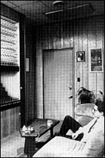

|
 A research volunteer attempts to alter the paths of balls cascading through a series of pegs. 1: Mind Over Matter Have you ever sat in your car at an intersection, willing the light to turn green? Or stared at a slot machine, trying to create a match with wishful thinking? According to the results of recent psychokinesis experiments, you should keep trying. Researchers at universities and private laboratories around the world now say that psychokinesis -- the ability to affect inanimate and remote objects with mental powers -- is a proven phenomenon. Their conclusions fly in the face of accepted scientific beliefs. Historically, the study of extrasensory perception, psychokinesis, clairvoyance, and similar phenomena has met with reactions ranging from bemused dismissal to religious persecution. Fortunately, those who explore the esoteric powers of the human mind are no longer burned at the stake. And, to repair the damage done by fraudulent claims and poorly funded research, laboratories today have increasingly applied more stringent scientific methodology to their studies. One such lab is the Princeton Engineering Anomalies Research program (PEAR). Established at Princeton University in 1979 by Robert Jahn, dean of the School of Engineering and Applied Science, PEAR studies the interaction of human consciousness with sensitive physical devices. PEAR uses a number of random event-generating machines (REGs) to test the powers of human consciousness. One machine cascades small balls down through a series of pegs to holding bins. When left alone, most of the balls pile up beneath the central opening and form a hill at the bottom. Operators test their telekinetic ability by attempting to shift the balls' flow slightly to the right or left. Other tests are more complex. Often, operators try to influence an REG connected to a visual display. As an electronic line moves randomly across the center of the screen, for example, the operator tries to mentally influence the machine and make the line move higher or lower. Variations on the REG theme include random drum beats (operators elicit louder or softer beats from the machine), blended computer images (operators try to bring one image to the fore, letting the other fade), and a pulsing fountain (operators attempt to affect the height of the stream, or make the fountain more chaotic or more structured). "The human mind is great at imposing order on seemingly random events. So the results of our new experiments with the drum beat and fountain should prove interesting," says Brenda Dunne, a developmental psychologist and PEAR's laboratory manager. In their book Margins of Reality (Harcourt Brace Jovanovich, San Diego, 1987), Jahn and Dunne examined the nature of psychokinesis (or PK -- the ability to affect inanimate objects by using psychic powers). They assert that their PK studies show much more reliable results than past research: "We believe that the sophistication of the equipment... the large databases, and the redundancy of the automated data handling are adequate to preclude technical or statistical artifacts or operator fraud. Beyond this, the specificity and replicability of individual operator signatures and the degrees of statistical significance argue forcefully against chance occurrence." While the measurable results of PEAR's experiments are extremely small, thousands of trials have shown they are statistically significant, repeatable, and, apparently, operator-specific. In short, recent experiments seem to indicate that the human mind can control delicate machinery by thought alone. PK researchers, however, are more convinced than the scientific community overall. Resistance to psychokinetic theories arises from centuries of institutional persecution, accusations, and ignorance. Copyright (c) 1997 Llewellyn Worldwide, Ltd. http://www.llewellyn.com
|